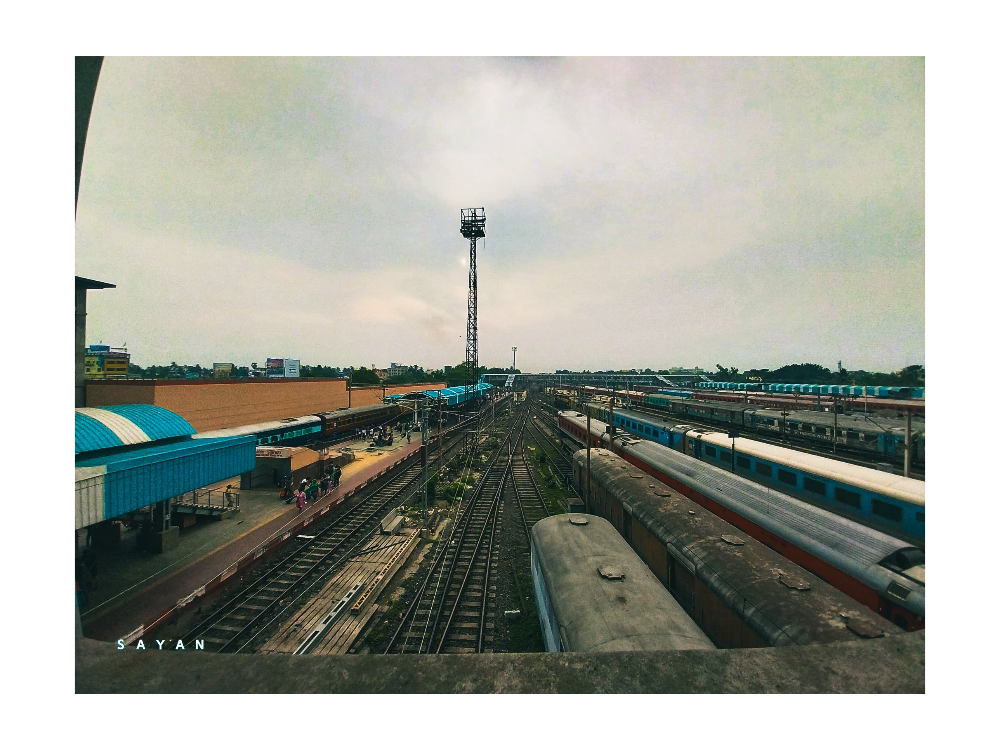

Explore and Experience the Beauty
Welcome to my visual journey! I'm Sayantan Dasgupta, a passionate photographer based on portrain and human life. Through my lens, I capture the beauty and essence of the world around me, from breathtaking landscapes and vibrant cityscapes to intimate portraits and captivating moments.We capture the real moments in our daily lives. People to live in their moments once again we create that moment infinity times.
Portrait photography, or portraiture, is a type of photography aimed toward capturing the personality of a person or group of people by using effective lighting, backdrops, and poses.
Wedding photography is a collection of images and photographs taken from the day of the wedding, providing the couple with a way to remember the important things that happened throughout the day. Every couple wants amazing wedding photos.
Commercial photography refers to photography that is used to sell or promote a product or service, or otherwise support a business or organization in making more money. Often, this can refer to product photography, lifestyle photography, and even fashion photography.
Fine art prints are high-quality prints that are intended to be as close to the original artwork as possible. They are made using high-end printers, archival paper, and pigment-based inks to capture the nuances, textures, brush strokes, depth, and dimension of the original.